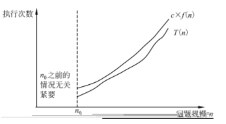
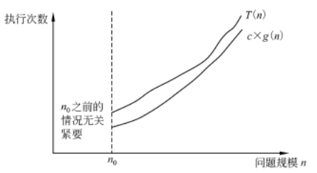
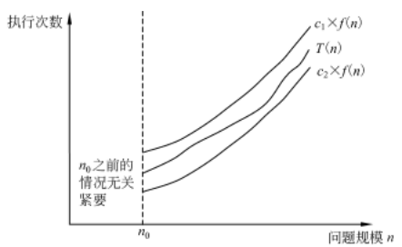
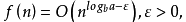
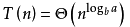
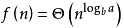
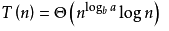
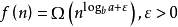
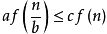
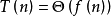

<!doctype html>
<html lang="zh-CN">
<head><meta name="generator" content="Hexo 3.9.0">
    <meta charset="UTF-8">
    <meta http-equiv="X-UA-Compatible" content="IE=11,IE=10,IE=9,IE=8">
    <meta name="baidu-site-verification" content="dIcXMeY8Ya">
    
    <title>算法时间复杂度的表达-渐进符号与主定理（转载） | 小牛试一刀</title>
    <meta name="viewport" content="width=device-width, initial-scale=1, maximum-scale=1, user-scalable=0">
    <meta name="keywords" content="Anthony, 刘经济, 技术博客">
    <meta name="description" content="待人以儒墨，不热爱前端技术的后端开发不是一个好的吃货。">

    
    <link rel="alternative" href="/atom.xml" title="小牛试一刀" type="application/atom+xml">
    
    
    <link rel="shortcut icon" href="/favicon.ico">
    
    <link rel="stylesheet" href="/css/style.css">
    <!--[if lt IE 9]>
    <script src="/js/html5.js"></script>
    <![endif]-->
    
<script>
var _hmt = _hmt || [];
(function() {
  var hm = document.createElement("script");
  hm.src = "https://hm.baidu.com/hm.js?d5ebf515ab530cfbdda5f5c85093fb41";
  var s = document.getElementsByTagName("script")[0]; 
  s.parentNode.insertBefore(hm, s);
})();
</script>


</head>
</html>
<body class="home">
    <!--[if lt IE 9]>
    <div class="browsehappy">
        当前网页 <strong>不支持</strong>
        你正在使用的浏览器. 为了正常的访问, 请 <a href="http://browsehappy.com/">升级你的浏览器</a>.
    </div>
    <![endif]-->

    <!-- 博客头部 -->
    <header class="header">
    <section class="container header-main">
        <div class="logo">
            <a href="/">
                <div class="cover">
                    <span class="name">小牛试一刀</span>
                    <span class="description">斯人笔记本</span>
                </div>
            </a>
        </div>
        <div class="dropnav icon-paragraph-justify" id="JELON__btnDropNav"></div>
        <ul class="menu hidden" id="JELON__menu">
            
            <li rel="/posts/722b27c3.html" class="item ">
                <a href="/" title="首页" class="icon-home">&nbsp;首页</a>
            </li>
            
            <li rel="/posts/722b27c3.html" class="item ">
                <a href="/about/" title="关于" class="icon-about">&nbsp;关于</a>
            </li>
            
            <li rel="/posts/722b27c3.html" class="item ">
                <a href="/comment/" title="留言" class="icon-comment">&nbsp;留言</a>
            </li>
            
        </ul>
        <div class="profile clearfix">
            <div class="feeds fl">
                
                
                <p class="links">
                    
                        <a href="https://github.com/haowanxing" target="_blank">Github</a>
                        |
                    
                        <a href="https://pages.coding.me" target="_blank">Hosted by Coding Pages</a>
                        
                    
                </p>
                <p class="sns">
                    
                        <a href="http://weibo.com/u/2214092525" class="sinaweibo" target="_blank"><b>■</b> 新浪微博</a>
                    
                        <a href="https://www.facebook.com/york.mail/" class="qqweibo" target="_blank"><b>■</b> Facebook</a>
                    
                    <a href="javascript: void(0);" class="wechat">
                        <b>■</b>
                        公众号
                        <span class="popover">
                            
                            <i class="arrow"></i>
                        </span>
                    </a>
                </p>
                
            </div>
            <div class="avatar fr">
                
            </div>
        </div>
    </section>
</header>


    <!-- 博客正文 -->
    <div class="container body clearfix">
        <section class="content">
            <div class="content-main widget">
                <!-- 文章页 -->
<!-- 文章 -->
<article class="post article">
    <header class="text-center">
        <h3 class="post-title"><span>算法时间复杂度的表达-渐进符号与主定理（转载）</span></h3>
    </header>
    <p class="post-meta text-center">
         发表于
        <time datetime="2019-05-22T01:09:37.000Z">2019-05-22 09:09:37</time>

        <!-- 不蒜子统计 -->
        <span id="busuanzi_container_page_pv" style='display:none'">
              <i class="icon-smile icon"></i> 阅读数：<span id="busuanzi_value_page_pv"></span>次
        </span>


    </p>
    <div class="post-content">
        <p>渐进符号是分析算法时间复杂度的常用记号，对于某个规模为n的问题，当n足够大时，就可以忽略掉复杂度表达式中的低阶项和最高次项的系数，由此引出“渐进复杂度”，并且用渐进符号来对“渐进复杂度”进行表达。</p>
<h3 id="一、渐进符号"><a href="#一、渐进符号" class="headerlink" title="一、渐进符号"></a>一、渐进符号</h3><p>1、O(大O符号）：上界<br>定义：若存在两个正的常数 c 和 n0 , 对于任意 n≥n0 , 都有 T( n)≤cf( n) ,则称T( n) = O( f( n) )(或称算法在 O( f( n))中)。</p>
<p>大 O 符号用来描述增长率的上限,表示 T( n)的增长最多像 f( n)增长的那样快,也就是说, 当输入规模为 n时, 算法消耗时间的最大值,这个上限的阶越低, 结果就越有价值。上界是对算法效率的一种承诺。</p>
<p>大O符号的含义如下图所示：<br></p>
<p>2、Ω（大Ω符号）：下界<br>定义：若存在两个正的常数 c和 n0 ,对于任意 n≥ n0 , 都有 T( n)≥cg( n) ,则称T( n) = Ω( g( n) )(或称算法在 Ω( g( n) )中)。</p>
<p>大 Ω符号用来描述增长率的下限, 也就是说, 当输入规模为 n 时,算法消耗时间的最小值。与大 O 符号对称, 这个下限的阶越高,结果就越有价值。</p>
<a id="more"></a>
<p>大Ω号的含义如下图所示：<br></p>
<p>大 Ω符号常用来分析某个问题或某类算法的时间下界。例如, 矩阵乘法问题的时间下界为 Ω( n^2) , 是指任何两个 n×n 矩阵相乘的算法的时间复杂性不会小于 n^2<br>, 基于比较的排序算法的时间下界为 Ω( nlog 2 n) ,是指无法设计出基于比较的排序算法, 其时间复杂性小于 nlog 2 n。</p>
<p>大 Ω符号常常与大 O 符号配合以证明某问题的一个特定算法是该问题的最优算法,或是该问题中的某算法类中的最优算法。</p>
<p>3、Θ(theta) ：紧确界<br>定义：若存在 3 个正的常数 c1 、 c2 和 n0 ,对于任意 n≥ n0 , 都有 c1f(n)≥ T(n)≥ c2f(n) , 则称 T( n) = Θ( f(n))。<br>Θ符号意味着 T( n)与 f( n)同阶, 用来表示算法的精确阶。</p>
<p>Θ符号的含义如下图所示。<br></p>
<h3 id="二、主定理"><a href="#二、主定理" class="headerlink" title="二、主定理"></a>二、主定理</h3><p>主定理主要用于对一些递归算法进行复杂性分析，这类算法的特征是：其复杂性表达式是以递推关系式表达的。主定理并不适用于所有类型的递推关系式。</p>
<p>假设有递推关系式：<br></p>
<p>其中 n为问题规模， a为递推的子问题数量， n/b 为每个子问题的规模（假设每个子问题的规模基本一样）， f(n)为递推以外进行的计算工作。<br>a≥1，b&gt;1为常数，f(n) 为函数，T(n) 为非负整数。则有以下结果：</p>
<p>(1)若：那么：</p>
<p>(2)若：，那么：</p>
<p>(3)若：，且对于某个常数c&lt;1, 和所有充分大的 n有:，那么</p>
<p>下面举几个例子来说明主定理的应用过程：</p>
<p>1、设某个算法的复杂性的递推关系式为：T(n)=4T(n/2)+n<br>对比主定理中递推关系式的标准形式：a=4,b=2,f(n)=n<br>所以n^(logba)=n^2,取 0&lt;ε&lt;1即可满足第一种情况，所以T(n)=Θ(n^2)</p>
<p>2、归并排序是一种很适合用递归实现的排序方法，其复杂性递推关系式为：T(n)=2T(n/2)+Θ(n)<br>满足主定理的第二种情况，所以其时间复杂度为：T(n)=nlogn</p>
<p>3、设某个算法的复杂性的递推关系式为：T(n)=4T(n/2)+n^3<br>很显然，满足主定理第三种情况，只需要取1/2≤c&lt;1即可。T(n)=n^3</p>
<hr>
<ul>
<li>作者：古月慕南 </li>
<li>来源：CSDN </li>
<li>原文：<a href="https://blog.csdn.net/u013468917/article/details/70229365" target="_blank" rel="noopener">https://blog.csdn.net/u013468917/article/details/70229365</a> </li>
</ul>

    </div>
    <p class="post-meta">
        <span class="post-cat">分类：
            <a class="cat-link" href="/categories/算法/">算法</a>
        </span>
        <span class="post-tags">
            标签：
            
    
        <a href="/tags/算法/" title="算法">算法</a> / 
    
        <a href="/tags/时间复杂度/" title="时间复杂度">时间复杂度</a> / 
    
        <a href="/tags/定理/" title="定理">定理</a>
    

        </span>
    </p>
</article>
<!-- 分享按钮 -->

  <div class="article-share clearfix text-center">
    <div class="share-area">
      <span class="share-txt">分享到：</span>
      <a href="javascript: window.open('http://service.weibo.com/share/share.php?url=' + encodeURIComponent(location.href) + '&title=' + document.title + '&language=zh_cn');" class="share-icon weibo"></a>
      <a href="javascript: alert('请复制链接到微信并发送');" class="share-icon wechat"></a>
      <a href="javascript: window.open('http://sns.qzone.qq.com/cgi-bin/qzshare/cgi_qzshare_onekey?url=' + encodeURIComponent(location.href) + '&title=' + document.title);" class="share-icon qqzone"></a>
      <a href="javascript: window.open('http://connect.qq.com/widget/shareqq/index.html?url=' + encodeURIComponent(location.href) + '&desc=imsry.cn个人博客&title=' + document.title + '&callback=' + encodeURIComponent(location.href));" class="share-icon qq"></a>
      <a href="javascript: window.open('http://shuo.douban.com/!service/share?href=' + encodeURIComponent(location.href) + '&name=' + document.title + '&text=' + document.title);" class="share-icon douban"></a>
    </div>
  </div>


<!-- 上一篇/下一篇 -->

<div class="article-nav clearfix">
    
    <span class="prev fl">
        上一篇<br >
        <a href="/posts/5f047c20.html">
            
                引用符号&#39;&amp;&#39;在foreach循环中的惊喜
            
        </a>
    </span>
    

    
    <span class="next fr">
        下一篇<br >
        <a href="/posts/9b10448.html">
            
                软考选择题-索引文件地址项
            
        </a>
    </span>
    
</div>

<!-- 文章评论 -->

  <script src="/js/comment.js"></script>
  <div id="comments" class="comment">
    <!--
    <div class="sign-bar">
      GitHub 已登录!
      <span class="sign-link">登出</span>
    </div>
    <section class="box">
      <div class="com-avatar"></div>
      <div class="com-text">
        <div class="main">
          <textarea class="text-area-edited show" placeholder="欢迎评论！"></textarea>
          <div class="text-area-preview"></div>
        </div>
        <div class="switch">
          <div class="switch-item on">编辑</div>
          <div class="switch-item">预览</div>
        </div>
        <div class="button">提交</div>
      </div>
    </section>
    <section class="tips">注：评论支持 markdown 语法！</section>
    <section class="list-wrap">
      <ul class="list">
        <li>
          <div class="user-avatar">
            <a href="/">
              
            </a>
          </div>
          <div class="user-comment">
            <div class="user-comment-header">
              <span class="post-name">张德龙</span>
              <span class="post-time">2017年12月12日</span>
              <span class="like liked">已赞</span>
              <span class="like-num">2</span>
            </div>
            <div class="user-comment-body">333333</div>
          </div>
        </li>
        <li>
          <div class="user-avatar">
            <a href="/">
              
            </a>
          </div>
          <div class="user-comment">
            <div class="user-comment-header">
              <span class="post-name">刘德华</span>
              <span class="post-time">2017年12月12日</span>
              <span class="like">点赞</span>
              <span class="like-num">2</span>
            </div>
            <div class="user-comment-body">vvvvv</div>
          </div>
        </li>
      </ul>
      <div class="page-nav">
        <a href="javascript: void(0);" class="item">1</a>
        <a href="javascript: void(0);" class="item">2</a>
        <a href="javascript: void(0);" class="item current">3</a>
      </div>
    </section>
    -->
  </div>
  <script>
  JELON.Comment({
    container: 'comments',
    label: 'Time-complexity-of-algorithm' || 'posts/722b27c3.html',
    owner: 'haowanxing',
    repo: 'haowanxing.github.io',
    clientId: '7e6b078394a99b7940d2',
    clientSecret: 'ff64a6b066e97af64358c44a96e0c7dd398aba1e'
  });
  </script>


            </div>

        </section>
        <!-- 侧栏部分 -->
<aside class="sidebar">
    
    <section class="widget">
        <h3 class="widget-hd"><strong>文章搜索</strong></h3>
        <div class="search-form">
  <form
    id="searchForm"
    method="GET"
    action="https://www.baidu.com/s"
    ectype="application/x-www-form-urlencoded"
    target="_blank"
    autocomplete="false"
    onsubmit="javascript: return false;">
    <input
      id="searchKeyword"
      type="text"
      class="form-control"
      placeholder="输入关键字搜索"
      autocomplete="false"
    />
    <input id="searchKeywordHidden" type="hidden" name="wd" />
    <input id="searchButton" class="btn" type="submit" value="搜索" />
  </form>
</div>
    </section>
    

    <section class="widget">
        <h3 class="widget-hd"><strong>文章分类</strong></h3>
        <!-- 文章分类 -->
<ul class="widget-bd">
    
    <li>
        <a href="/categories/杂谈/">杂谈</a>
        <span class="badge">(4)</span>
    </li>
    
    <li>
        <a href="/categories/学习笔记/">学习笔记</a>
        <span class="badge">(47)</span>
    </li>
    
    <li>
        <a href="/categories/编程语言/">编程语言</a>
        <span class="badge">(6)</span>
    </li>
    
    <li>
        <a href="/categories/Learn-GO/">Learn-GO</a>
        <span class="badge">(6)</span>
    </li>
    
    <li>
        <a href="/categories/算法/">算法</a>
        <span class="badge">(6)</span>
    </li>
    
    <li>
        <a href="/categories/开发板/">开发板</a>
        <span class="badge">(1)</span>
    </li>
    
    <li>
        <a href="/categories/Linux/">Linux</a>
        <span class="badge">(15)</span>
    </li>
    
    <li>
        <a href="/categories/PHP/">PHP</a>
        <span class="badge">(9)</span>
    </li>
    
    <li>
        <a href="/categories/网络安全/">网络安全</a>
        <span class="badge">(2)</span>
    </li>
    
    <li>
        <a href="/categories/数据库/">数据库</a>
        <span class="badge">(2)</span>
    </li>
    
    <li>
        <a href="/categories/MacOS/">MacOS</a>
        <span class="badge">(1)</span>
    </li>
    
    <li>
        <a href="/categories/Web/">Web</a>
        <span class="badge">(2)</span>
    </li>
    
    <li>
        <a href="/categories/我的分享/">我的分享</a>
        <span class="badge">(1)</span>
    </li>
    
    <li>
        <a href="/categories/开放平台/">开放平台</a>
        <span class="badge">(1)</span>
    </li>
    
    <li>
        <a href="/categories/考试/">考试</a>
        <span class="badge">(1)</span>
    </li>
    
    <li>
        <a href="/categories/游戏/">游戏</a>
        <span class="badge">(2)</span>
    </li>
    
    <li>
        <a href="/categories/学习笔记/Linux/">Linux</a>
        <span class="badge">(1)</span>
    </li>
    
</ul>
    </section>

    
    <section class="widget">
        <h3 class="widget-hd"><strong>热门标签</strong></h3>
        <!-- 文章标签 -->
<div class="widget-bd tag-wrap">
  
    <a class="tag-item" href="/tags/Docker/" title="Docker">Docker (1)</a>
  
    <a class="tag-item" href="/tags/Golang/" title="Golang">Golang (1)</a>
  
    <a class="tag-item" href="/tags/LNMP/" title="LNMP">LNMP (2)</a>
  
    <a class="tag-item" href="/tags/算法/" title="算法">算法 (1)</a>
  
    <a class="tag-item" href="/tags/时间复杂度/" title="时间复杂度">时间复杂度 (1)</a>
  
    <a class="tag-item" href="/tags/定理/" title="定理">定理 (1)</a>
  
    <a class="tag-item" href="/tags/OrangePi/" title="OrangePi">OrangePi (1)</a>
  
    <a class="tag-item" href="/tags/Network/" title="Network">Network (2)</a>
  
    <a class="tag-item" href="/tags/网卡/" title="网卡">网卡 (1)</a>
  
    <a class="tag-item" href="/tags/PHP/" title="PHP">PHP (11)</a>
  
    <a class="tag-item" href="/tags/Apache/" title="Apache">Apache (4)</a>
  
    <a class="tag-item" href="/tags/Go/" title="Go">Go (1)</a>
  
    <a class="tag-item" href="/tags/gRPC/" title="gRPC">gRPC (1)</a>
  
    <a class="tag-item" href="/tags/RPC/" title="RPC">RPC (1)</a>
  
    <a class="tag-item" href="/tags/Linux/" title="Linux">Linux (3)</a>
  
    <a class="tag-item" href="/tags/Proxy/" title="Proxy">Proxy (1)</a>
  
    <a class="tag-item" href="/tags/面试/" title="面试">面试 (1)</a>
  
    <a class="tag-item" href="/tags/firewall/" title="firewall">firewall (1)</a>
  
    <a class="tag-item" href="/tags/CentOS/" title="CentOS">CentOS (3)</a>
  
    <a class="tag-item" href="/tags/https/" title="https">https (1)</a>
  
    <a class="tag-item" href="/tags/Chrome/" title="Chrome">Chrome (1)</a>
  
    <a class="tag-item" href="/tags/性能/" title="性能">性能 (3)</a>
  
    <a class="tag-item" href="/tags/VPN/" title="VPN">VPN (1)</a>
  
    <a class="tag-item" href="/tags/DS-Store/" title=".DS_Store">.DS_Store (1)</a>
  
    <a class="tag-item" href="/tags/Discuz/" title="Discuz">Discuz (1)</a>
  
    <a class="tag-item" href="/tags/MySQL/" title="MySQL">MySQL (9)</a>
  
    <a class="tag-item" href="/tags/C语言/" title="C语言">C语言 (1)</a>
  
    <a class="tag-item" href="/tags/Java/" title="Java">Java (2)</a>
  
    <a class="tag-item" href="/tags/Glassfish/" title="Glassfish">Glassfish (1)</a>
  
    <a class="tag-item" href="/tags/html/" title="html">html (1)</a>
  
    <a class="tag-item" href="/tags/Javascript/" title="Javascript">Javascript (1)</a>
  
    <a class="tag-item" href="/tags/js/" title="js">js (1)</a>
  
    <a class="tag-item" href="/tags/MarkDown/" title="MarkDown">MarkDown (1)</a>
  
    <a class="tag-item" href="/tags/Laravel/" title="Laravel">Laravel (1)</a>
  
    <a class="tag-item" href="/tags/数据结构/" title="数据结构">数据结构 (1)</a>
  
    <a class="tag-item" href="/tags/LAMP/" title="LAMP">LAMP (1)</a>
  
    <a class="tag-item" href="/tags/Vim/" title="Vim">Vim (1)</a>
  
    <a class="tag-item" href="/tags/MacOS/" title="MacOS">MacOS (4)</a>
  
    <a class="tag-item" href="/tags/php/" title="php">php (2)</a>
  
</div>
    </section>
    

    

    
    <!-- 友情链接 -->
    <section class="widget">
        <h3 class="widget-hd"><strong>友情链接</strong></h3>
        <!-- 文章分类 -->
<ul class="widget-bd">
    
        <li>
            <a href="https://imququ.com/" target="_blank" title="Jerry Qu">Jerry Qu</a>
        </li>
    
        <li>
            <a href="https://jelon.info/" target="_blank" title="Zhang Delong">Jelon</a>
        </li>
    
</ul>

    </section>
    
</aside>
<!-- / 侧栏部分 -->
    </div>

    <!-- 博客底部 -->
    <footer class="footer">
<div style="margin-bottom:1em;">

        <!-- 不蒜子统计 -->
        <span id="busuanzi_container_site_pv">
                本站总访问量<span id="busuanzi_value_site_pv"></span>次
        </span>
        <span class="post-meta-divider">|</span>
        <span id="busuanzi_container_site_uv" style='display:none'>
                本站访客数<span id="busuanzi_value_site_uv"></span>人
        </span>
        <script async src="//busuanzi.ibruce.info/busuanzi/2.3/busuanzi.pure.mini.js"></script>
  
</div>
    &copy;
    
        2014-2020
    

    <a href="/">Best Wishes</a>
</footer>
<div class="back-to-top" id="JELON__backToTop" title="返回顶部">返回顶部</div>

    <!--博客js脚本 -->
    <!-- 这里放网站js脚本 -->
<script src="/js/main.js?v=1590744014946"></script>
</body>
</html>